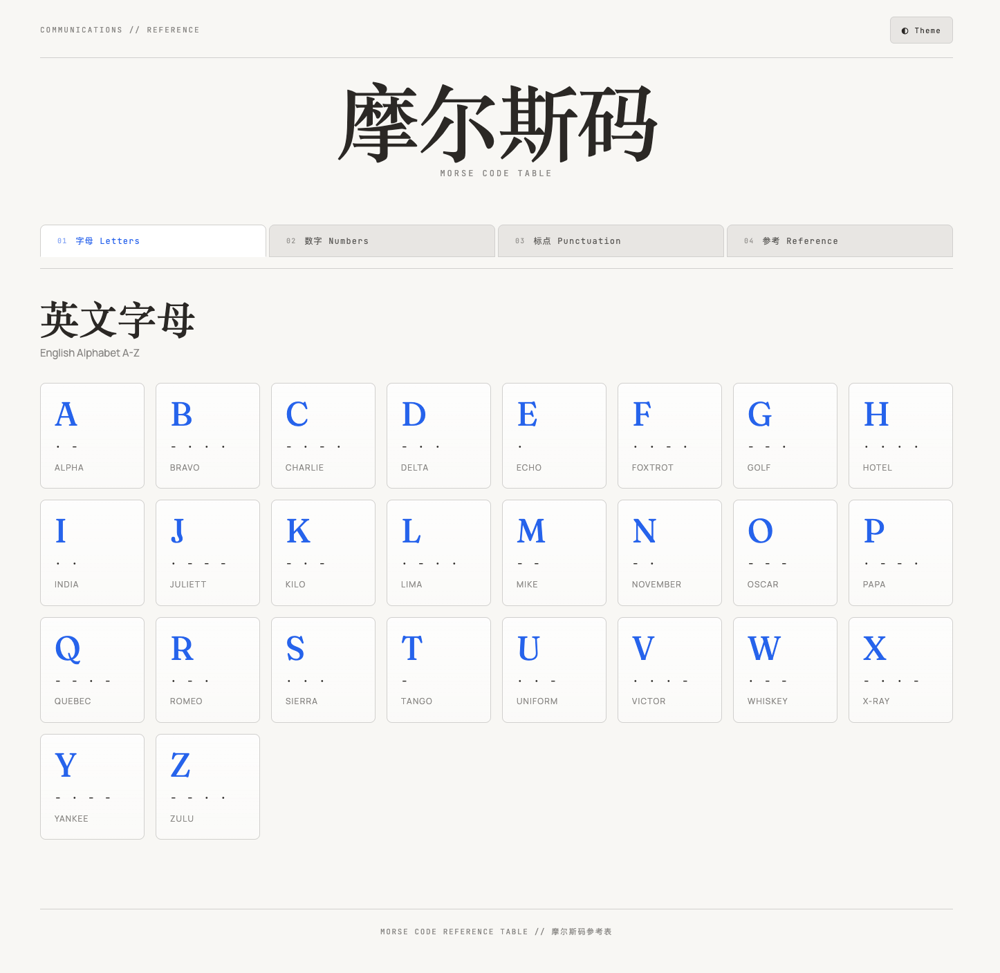

摩尔斯码虽然发明于19世纪，但它依然是理解数字通信原理的绝佳入门教材。通过点（·）和划（−）的不同组合，就能传递所有信息，这种二进制思维正是现代数字技术的基础。
然而，市面上的摩尔斯码学习工具大多缺乏互动性。对于孩子来说，光看码表很难建立直观理解。能不能听到声音呢？这正是我开发这个工具的初衷。

✨ 工具特色
🎨 清晰的视觉呈现
网页分为四个标签页，系统性地组织内容：
- 字母表：A-Z 26个英文字母，配有北约音标字母
- 数字：0-9 的摩尔斯编码
- 标点符号：常用标点及特殊字符
- 参考信息：基本规则、常用缩写、业余无线电Q代码
🔊 互动音频功能（核心亮点！）
这是最让孩子喜欢的功能——点击任何一个字符卡片，就能听到对应的摩尔斯码声音！
- 使用Web Audio API生成600Hz正弦波
- 严格遵循摩尔斯码时序标准
- 点=1单位时间，划=3单位时间
- 播放时卡片会有绿色发光动画反馈
🌓 深色/浅色主题切换
保护眼睛，适应不同光线环境。
📱 响应式设计
电脑、平板、手机都能完美使用，随时随地学习。
🎓 教育价值
- 听觉-视觉双重刺激：看到编码，听到声音，记忆更深刻
- 自主探索学习：孩子可以随意点击，按自己的节奏学习
- 培养二进制思维：理解"最简单的符号可以表达复杂信息"
- 连接历史与技术：从电报到5G，通信技术的演变
在教育场景中，AI不是替代人类，而是赋能人类。家长/老师专注于"教什么"和"为什么教"，AI帮助实现"怎么呈现"。
🛠️ AI辅助开发的故事
作为技术背景的家长，我本来想从零开始写代码。但这次尝试了新的工作流：
AI负责基础代码生成 → 我负责产品设计和体验优化
整个过程非常高效：
- 描述需求 → AI生成HTML/CSS/JS框架
- 测试功能 → 发现问题 → AI迭代优化
- 调整细节 → 添加主题切换、动画效果
最终成果：一个功能完整、设计精美、完全可用的教育工具，开发时间比传统方式缩短了80%以上。
这也让我思考：在教育场景中，AI不是替代人类，而是赋能人类。家长/老师专注于"教什么"和"为什么教"，AI帮助实现"怎么呈现"。
💡 使用建议
给家长的建议：
- 从孩子感兴趣的内容开始：如果孩子喜欢数字，就先从数字标签页开始
- 一起玩"猜编码"游戏：播放声音，让孩子猜是哪个字符
- 联系实际生活：解释SOS求救信号、电影里的摩尔斯码情节
- 适度引导，不过度教学：保持趣味性最重要
给老师的建议：
- 可作为信息技术课的导入素材
- 结合通信史教学，展示技术演变
- 组织小组竞赛，看谁能快速解码
- 跨学科整合：数学（二进制）、历史（电报）、物理（声波）
📝 写在最后
这个小小的工具，凝聚了几个教育理念：
- 互动性是学习的催化剂
- 技术可以增强理解，而不是替代思考
- 家长是最好的产品经理——我们最了解孩子的需求
如果你也在寻找有趣的方式向孩子介绍技术概念，希望这个工具能给你一些灵感。